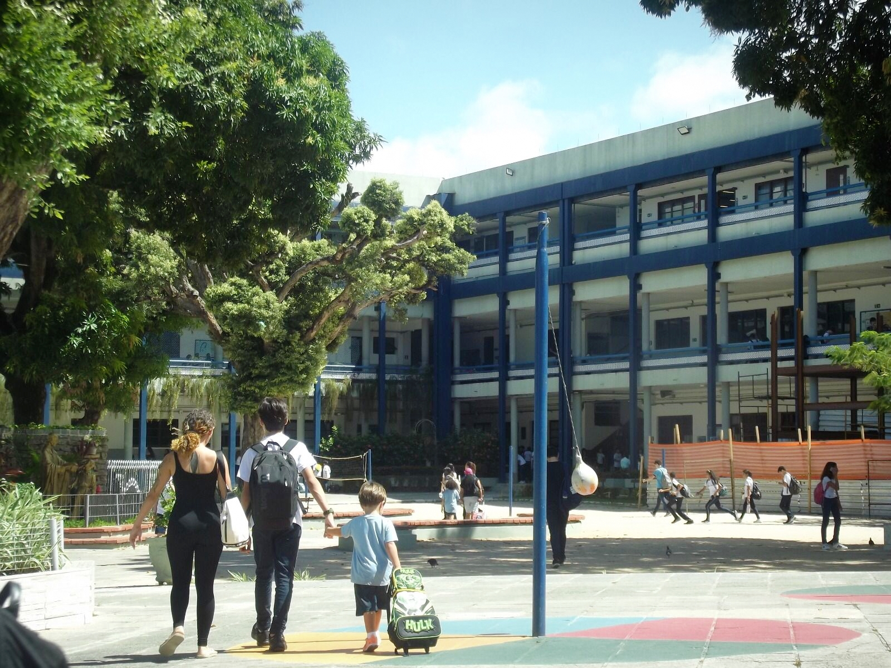
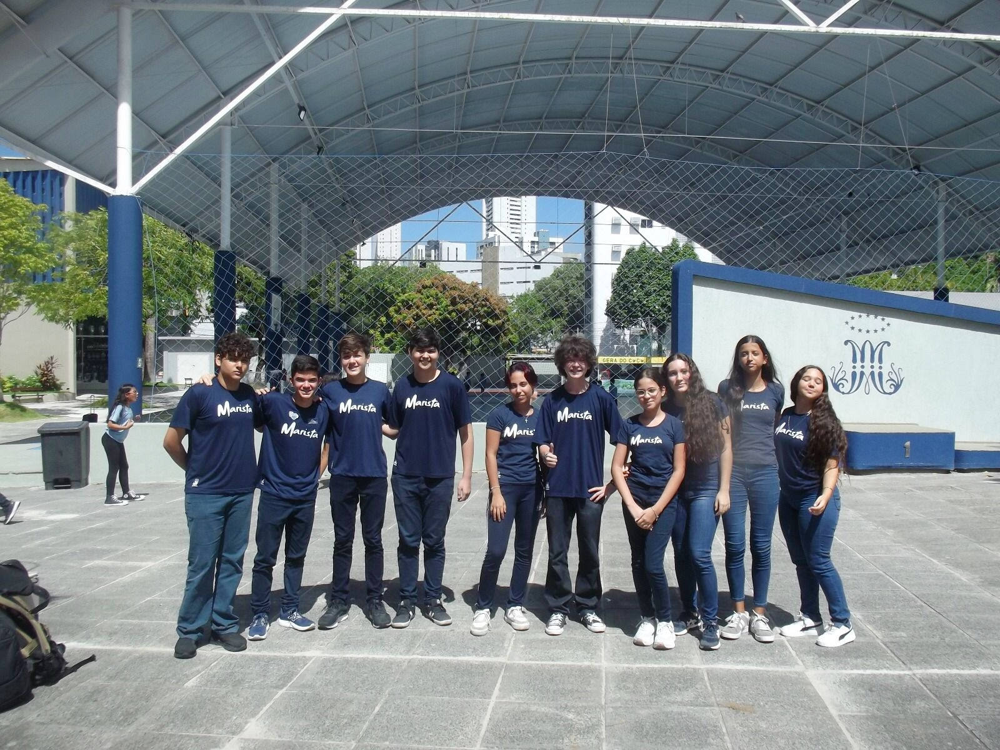

Colégio Marista São Luís

O nosso colégio, localizado no bairro das Graças, em Recife(Pernambuco), tem um perímetro de aproximadamente 731 metros, abrangendo um largo espaço, cheio de áreas naturais, com árvores, arbustos e jardins. A escola é um espaço geralmente cheio, com mais de 1000 estudantes e o número de funcionários é em torno desse mesmo valor, ou até mais. É um local que está estabelecido a exatamente 115 anos, recebendo uma homenagem na Assembleia Legislativa do Estado de Pernambuco (ALEPE) recentemente, quando completou seu último aniversário.
Sobre o colégio Marista
PERGUNTAS:
1. Qual a origem histórica do local?
2. Por que é considerado patrimônio?
3. Que elementos culturais ou naturais se destacam?
1. Começou com um jovem chamado Marcelino Champagnat, lá na França, onde em La Valla, ele aprendeu os caminhos de Maria e tentou reproduzir isso para os jovens da região. E então, isso foi se disseminando pelo mundo, chegou ao Brasil, e especificamente no ano de 1911, chegou aqui no bairro das Graças, e então foi fundado nosso colégio.
2. O colégio não é um patrimônio estadual, porém, por vários fatores, esse local é muito importante aqui na região das Graças. Primeiramente, por ser um ponto onde está há mais de 100 anos e agrega vários estudantes, e pelo ponto social, modifica a vida de vários estudantes e jovens por muitos anos. Também por valores econômicos, vários restaurantes e outros espaços são construídos estrategicamente nessa região para atender os estudantes do colégio. E ainda mais, a estrutura do nosso colégio mostra que ele foi construído a muito tempo mas também vai evoluindo com o tempo, que tenta se modernizar de acordo com a juventude.
3. Essa escola é um local muito tradicional e geralmente faz parte da vida das pessoas desde a infância até a formação no terceiro ano do Ensino Médio, ou seja, é um local que tem uma formação ao longo do crescimento, então é um local que modifica a vida das pessoas, tentando torná-las virtuosos cidadãos e bons cristãos. Ela também é cercada por eventos, então os estudantes e as pessoas que convivem pela escola têm vivências nesse espaço. Também é um colégio cheio de natureza, tem várias árvores e tem áreas sustentáveis, tem várias áreas com areia, árvores, plantas e arbustos, muito bem tratados e feitos para ser um espaço mais harmonioso e sustentável.
1. Qual a origem histórica do local?
2. Por que é considerado patrimônio?
3. Que elementos culturais ou naturais se destacam?
1. Começou com um jovem chamado Marcelino Champagnat, lá na França, onde em La Valla, ele aprendeu os caminhos de Maria e tentou reproduzir isso para os jovens da região. E então, isso foi se disseminando pelo mundo, chegou ao Brasil, e especificamente no ano de 1911, chegou aqui no bairro das Graças, e então foi fundado nosso colégio.
2. O colégio não é um patrimônio estadual, porém, por vários fatores, esse local é muito importante aqui na região das Graças. Primeiramente, por ser um ponto onde está há mais de 100 anos e agrega vários estudantes, e pelo ponto social, modifica a vida de vários estudantes e jovens por muitos anos. Também por valores econômicos, vários restaurantes e outros espaços são construídos estrategicamente nessa região para atender os estudantes do colégio. E ainda mais, a estrutura do nosso colégio mostra que ele foi construído a muito tempo mas também vai evoluindo com o tempo, que tenta se modernizar de acordo com a juventude.
3. Essa escola é um local muito tradicional e geralmente faz parte da vida das pessoas desde a infância até a formação no terceiro ano do Ensino Médio, ou seja, é um local que tem uma formação ao longo do crescimento, então é um local que modifica a vida das pessoas, tentando torná-las virtuosos cidadãos e bons cristãos. Ela também é cercada por eventos, então os estudantes e as pessoas que convivem pela escola têm vivências nesse espaço. Também é um colégio cheio de natureza, tem várias árvores e tem áreas sustentáveis, tem várias áreas com areia, árvores, plantas e arbustos, muito bem tratados e feitos para ser um espaço mais harmonioso e sustentável.
Imagens


Galeria de fotos.